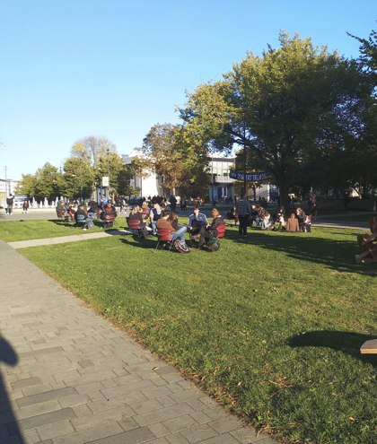
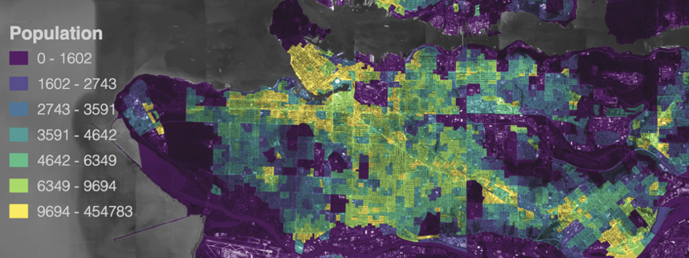
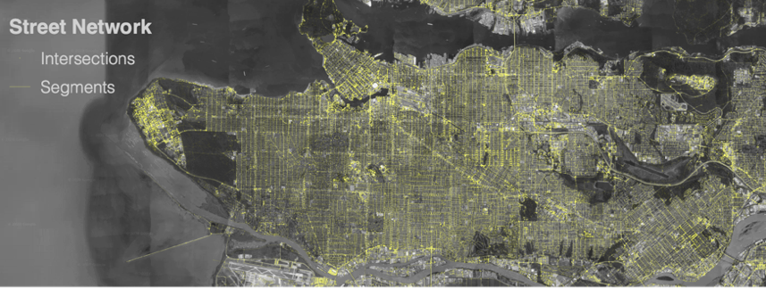
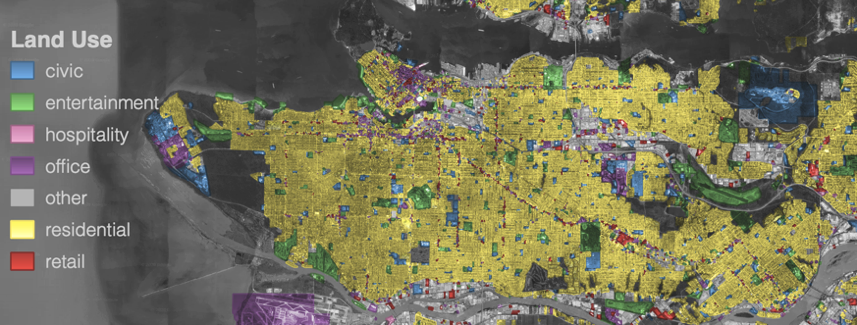

Spatial Network Analysis
Spatial Network
A graph whose edges and nodes are spatial elements
Types of spatial network analysis
Shortest paths: one element in relation to another
Centrality: all elements in relation to each other
Service area: reach from an element along the network
Walkability case study
| Walkability is the ability of spaces to support walking in detriment of other transport modes. |
| Elements located within walkable distances tend to influence how much people walk. |
 |
Why Walkability?
Walkable places have:
|  |
|
How to Measure Walkability?
Walkability is inherently a spatial concept, thus it can be measured by spatial attributes, such as:
1. Population Density
2. Street Network
3. Land Use
Walkability Indices
Index = Indicator1 + Indicator2 + ... + IndicatorN
Walkability Index: a set of indicators that represents people's tendency to walk
- Neighborhood Quality on US cities (Frank et al. 2010)
- Intersection density
- Residential density
- Retail floor area ratio
- Land use mix
Cities are complex non-linear systems
Walkability indices represent probabilistic patterns of human behaviour
Tools and Resources
 |
|
Geographic information system (GIS) application for viewing, editing and analyzing geospatial data
|
Samples: Urban blocks of 8 neighborhoods in Vancouver
Source: City of Vancouver

Indicators: Street Network + Business Licenses + Population Density
Source: OpenStreetMap

Method: Network analysis

Output: Walkability index